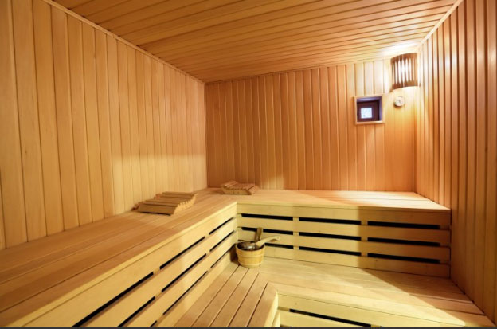

Заголовок страницы
Баня "Альпы"
Баня — помещение, оборудованное для мытья человека с одновременным действием воды и горячего воздуха (в турецких и римских банях) или воды и пара (в русской и финской бане). мытья человека с одновременным действием воды и горячего воздуха (в турецких и римских банях) или воды и пара (в русской и финской бане).
Подзаголовок
Баня — помещение, оборудованное для мытья человека с одновременным действием воды и горячего воздуха (в турецких и римских банях) или воды и пара (в русской и финской бане). мытья человека с одновременным действием воды и горячего воздуха (в турецких и римских банях) или воды и пара (в русской и финской бане). Ба́ня — помещение, оборудованное для мытья человека с одновременным действием воды и горячего воздуха (в турецких и римских банях) или воды и пара (в русской и финской бане). мытья человека с одновременным действием воды и горячего воздуха (в турецких и римских банях) или воды и пара (в русской и финской бане).
Подзаголовок 2
Баня — помещение, оборудованное для мытья человека с одновременным действием воды и горячего воздуха (в турецких и римских банях) или воды и пара (в русской и финской бане). мытья человека с одновременным действием воды и горячего воздуха (в турецких и римских банях) или воды и пара (в русской и финской бане). Ба́ня — помещение, оборудованное для мытья человека с одновременным действием воды и горячего воздуха (в турецких и римских банях) или воды и пара (в русской и финской бане). мытья человека с одновременным действием воды и горячего воздуха (в турецких и римских банях) или воды и пара (в русской и финской бане).

Баня "Альпы"
Баня — помещение, оборудованное для мытья человека с одновременным действием воды и горячего воздуха (в турецких и римских банях) или воды и пара (в русской и финской бане). мытья человека с одновременным действием воды и горячего воздуха (в турецких и римских банях) или воды и пара (в русской и финской бане).
- Вместимоть 5 человек
- Стоимость часа 700
- Русская парная
- Бассейн
Баня — помещение, оборудованное для мытья человека с одновременным действием воды и горячего воздуха (в турецких и римских банях) или воды и пара (в русской и финской бане). мытья человека с одновременным действием воды и горячего воздуха (в турецких и римских банях) или воды и пара (в русской и финской бане).